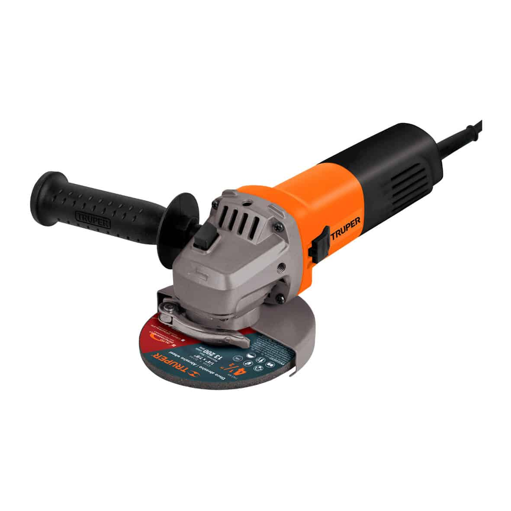

Esmeriladora Angular
- Hasta 30% más de torque, comparado con la DCG418 usando la batería DCB609.
- SISTEMA KICKBACK BRAKE™, detiene el disco rápidamente y apaga la herramienta cuando detecta un atascamiento.
- SISTEMA E-CLUTCH™, en caso de una sobrecarga, la herramienta se apagará para reducir la reacción del torque hacia el usuario.
- Motor de 850 W, montado sobre balero de bolas para mayor vida útil y mejor desempeño
- Mango auxiliar ajustable a 3 posiciones para mayor control
- Cuerpo delgado y ligero, ideal para trabajos de instalación de pisos
- Cómodo botón de accionamiento con función de uso continuo
- Para esmerilar y cortar acero, ladrillos, azulejos y piedra
